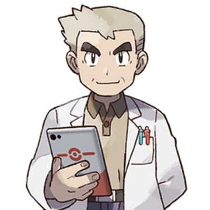
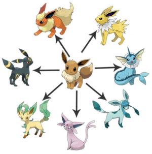

L'univers de Pokémon :
Dans l'univers des Pokémon, les animaux du monde réel n'existent pas (ou très peu). Le monde est peuplé de Pokémon, des créatures qui vivent en harmonie avec les humains, mais possèdent des aptitudes quasiment impossibles pour des animaux du monde réel, telles que cracher du feu, comme Dracaufeu, ou encore générer de grandes quantités d'électricité, comme Magnéti. Chaque sorte de Pokémon possède un nom, qui peut à la fois être utilisé pour parler de Pokémon individuels ou de l'ensemble des Pokémon de la même sorte. Certains Pokémon dits « légendaires » sont les seuls représentants de leur sorte et dans les jeux récents sont des entités incarnant une puissance naturelle. Dans la série animée, les Pokémon ne peuvent prononcer en règle générale que leur nom, mais il existe quelques cas rares où des Pokémon ont appris un langage humain comme le fameux Miaouss de la Team Rocket. Des humains utilisent ces aptitudes dans leurs activités professionnelles : ainsi les Caninos de l'Agent Jenny l'aident à poursuivre les criminels. Certains dressent les Pokémon pour organiser des combats entre eux, transportant généralement les Pokémon dans des Poké Balls, des balles compactes où un Pokémon peut être contenu. Ces dresseurs Pokémon voyagent à travers le monde dans le but d'attraper le plus grand nombre de Pokémon, puis éventuellement devenir Maître Pokémon, un titre donné au dresseur ayant battu le maître de la ligue. Certains dresseurs enregistrent les informations des Pokémon qu'ils ont capturés ou observés dans un Pokédex, un appareil électronique qui répertorie et affiche les informations sur les différents Pokémon. À partir de l'âge de dix ans, il est possible de commencer son apprentissage de dresseur en recevant une licence de la Ligue Pokémon10. L'apprentissage consiste à partir capturer des Pokémon dans leurs habitats naturels, puis à les entrainer au combat. Les matchs Pokémon consistent en combats entre les Pokémon de deux dresseurs, et se terminent quand tous les Pokémon de l'un d'entre eux sont KO. La mort des Pokémon est donc évitée, et les Pokémon peuvent être soignés au Centre Pokémon, un bâtiment où les infirmières guérissent les Pokémon blessés. Pour participer à des compétitions, les dresseurs peuvent se déplacer aux différentes Arènes Pokémon où un badge leur est offert s'ils sortent victorieux d'un match contre le champion d'arène. Après avoir gagné tous les badges de la région, un dresseur peut partir au siège de la Ligue Pokémon pour affronter quatre dresseurs d'élite, souvent appelés le « Conseil des 4 ». Ce n'est qu'après avoir battu ces quatre dresseurs que le dresseur peut affronter le Maître de la Ligue.
Types et évolution :
Il existe dix-huit types (voir la liste ci-contre). Chaque Pokémon possède un ou deux types qui conditionnent la plupart de ses attaques et caractérisent ses forces et ses faiblesses vis-à-vis des autres types, organisées comme le pierre-papier-ciseaux pour équilibrer les combats13. De nombreux Pokémon se transforment en une nouvelle sorte (ce phénomène est appelé une « évolution ») après avoir atteint un certain niveau d'expérience ou d'autres critères plus complexes (objets, échange, etc) ; cela leur donne souvent de meilleures statistiques de combat et parfois un nouveau type. En tout, un Pokémon de base peut évoluer au plus deux fois. Quelques Pokémon peuvent évoluer de plusieurs manières différentes (l'archétype de ces Pokémon est Évoli). Les types Acier et Ténèbres apparaissent dans la deuxième génération (Pokémon Or, Argent et Cristal), de même que le type Fée apparaît dans la sixième génération (Pokémon X et Y). Ils sont principalement attribués à des monstres propres à ces nouvelles générations, toutefois des Pokémon des générations antérieures se sont également vu attribuer ces types. Magnéti, créé dans la première génération en tant que type Électrique, est ainsi du double-type Électrique et Acier à partir de la deuxième génération. Depuis l'apparition de la sixième génération, il existe un nouveau système d'évolution nommé "méga-évolution", décliné de deux manières différentes : la Primo-Résurgence (réservée à Kyogre et Groudon) et la méga-évolution classique. Cette dernière se réalise par l’intermédiaire d'une pierre portée par le Pokémon, dont le nom se compose de celui du Pokémon et du suffixe-ite (exemple : Braségalite pour Braségali). Lors de la septième génération, c'est une autre forme d'évolution qui a fait son apparition, pouvant être assimilée au résultat d'une spéciation allopatrique. Ainsi, sur les îles d'Alola, on trouve des formes endémiques de certains Pokémon comme Noadkoko, appelées sobrement "formes régionales". Les "capacités Z" apparaissent également.